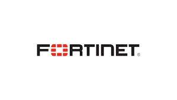
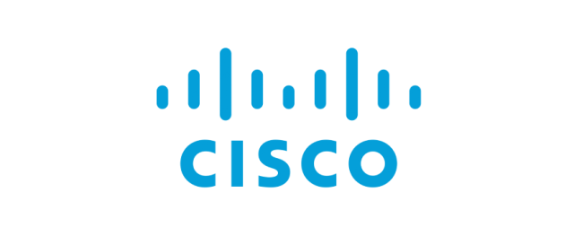
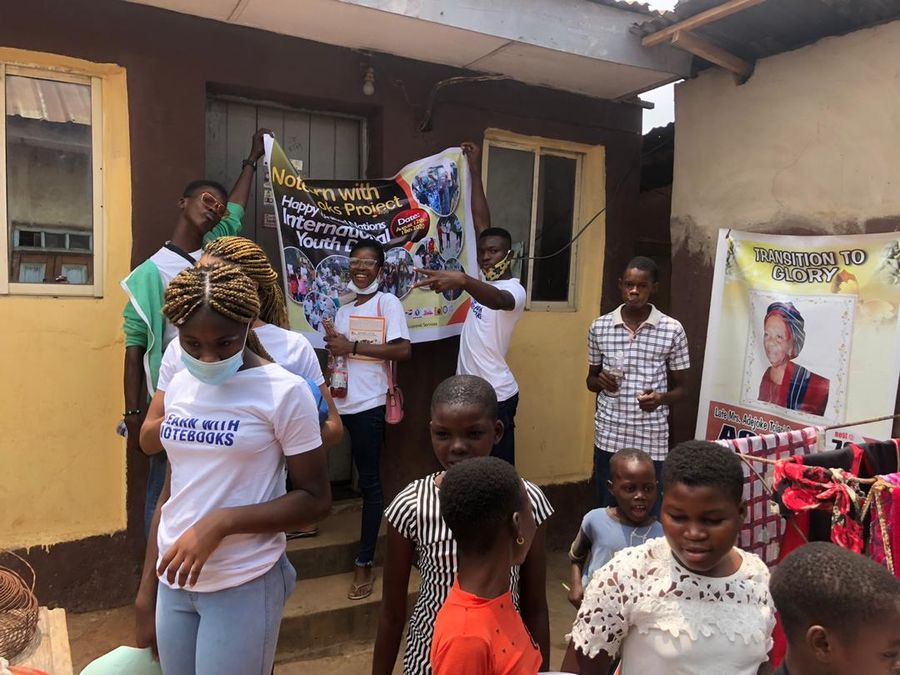
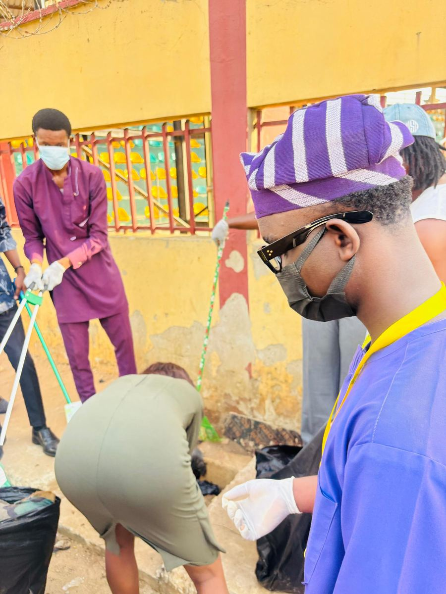
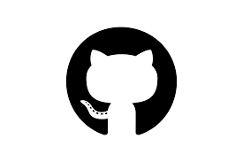
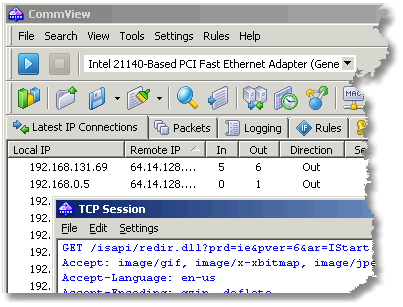
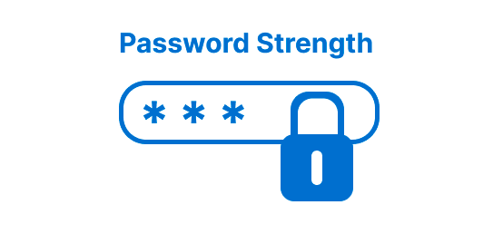

Umoh Ambrose Elijah
I study attacker behavior so I can build better defenses — currently securing documents by day at AIICO Insurance, training for the SOC by night, and building tools under my own brand, Cyberhayde.
Defense-minded, by training and by trade
I'm a cybersecurity professional in training and Computer Science student at the National Open University of Nigeria (NOUN), with a strong focus on security operations, threat detection, and defensive cybersecurity.
My path into cybersecurity is driven by analytical curiosity, problem-solving, and a passion for protecting digital environments through proactive monitoring, incident analysis, and network defense strategies. I've built hands-on experience through certifications, cybersecurity simulations, and practical labs covering threat analysis, network security, and defensive technologies.
Currently I serve as an EDMS Officer at AIICO Insurance PLC, where I support secure document management, access control, and information governance — work that reinforces my understanding of operational security and data protection in real-world environments.
Beyond the technical side, I'm the author of Echoes of Wisdom, a Global Peace Ambassador, and an advocate for using technology as a tool for empowerment, youth inspiration, and positive global impact.
My long-term goal is to grow into a highly skilled SOC Analyst, contributing to threat detection, incident response, and cyber defense at a global scale.
Echoes of Wisdom
A practical guide to living with clarity — get it on Selar →
A comprehensive skill set across security, systems, and people
Combining cybersecurity fundamentals, technical depth, and continuous, self-directed learning.
Security Operations
- Security Operations (SOC fundamentals)
- Threat Detection & Analysis
- Incident Investigation
- Network Security & Monitoring
- Vulnerability Awareness
- Security Risk Management
Tools & Systems
- Networking Fundamentals (CCNA-level)
- Linux & Command Line
- SIEM Concepts (Splunk / Log Analysis)
- Microsoft Defender Security Concepts
- Firewall Fundamentals (Fortinet)
- Endpoint Security
How I Work
- Analytical Thinking
- Technical Troubleshooting
- Teaching & Knowledge Sharing
- Communication
- Problem Solving
- Leadership & Mentorship
Certifications & recognition


▣ Certifications
★ Honors & Accomplishments
Community impact & volunteer work
I'm passionate about giving back to the community and creating meaningful change, particularly for young people and underserved communities — through hands-on initiatives that make tangible, on-the-ground contributions.

Sharing Stationery to Children in Underserved Communities
Partnered with a local youth initiative to distribute school supplies to children living in underserved areas — reducing barriers to education and supporting students who lacked access to basic learning materials.

Street Clean-Up & Sanitation Drive
Organized and took part in a sanitation exercise to clean public streets and promote hygiene awareness — improving local living conditions and engaging residents in sustainable sanitation practices.
Ventures — Cyberhayde
Outside my day-to-day work, I run Cyberhayde: an independent software brand helping individuals and small businesses digitize and automate the manual processes slowing them down.
Smaxel — Excel Automation Toolkit
A 49-tool Windows desktop toolkit built for anyone who lives inside spreadsheets — admin staff, data officers, finance teams, auditors, and small business owners. It handles the cleaning, matching, reformatting, and hunting-through-files work in seconds instead of hours.
Church Online Archive
A free, cloud-synced records app built for a growing congregation still tracking members, attendance, and visitors on paper and in scattered notebooks. The whole admin team runs it from their phones, members records, attendance trends, visitor and outreach tracking, all in one place.
Inventory Tracker
An offline-first inventory app built for shops running stock counts from memory or a notebook. Tracks stock and sales straight from the shop counter, and keeps working even without steady internet.
Cyberhayde
Cyberhayde is the organization behind Smaxel and future releases — built around one idea: manual, repetitive processes (not just paper ones) are a solvable problem. Every product ships with the same security-first instinct I bring to my SOC training: lock it down, document it well, and make it easy for a non-technical person to trust.
Hands-on security & systems work
A comprehensive set of practical builds spanning cryptography, network analysis, and applied security concepts.
Caesar Cipher Encryption Tool
A Python-based encryption and decryption tool built on the Caesar cipher algorithm, with an educational video walking through how it works.

View code →
Python Packet Sniffer
A network packet analyzer that captures and inspects traffic in real time, paired with educational content on network security monitoring.
View code →Image Encryption System
An image encryption technique built on pixel manipulation — a practical demonstration of encryption concepts applied to visual data.
View code →
Password Complexity Checker
A Python tool that evaluates password strength and enforces security best practices, helping users build stronger password policies.
View code →FortiGate Security Configuration
Hands-on FortiGate configuration covering VPN setup, network security policy, and intrusion prevention.
View code →Malware Analysis Lab
A FLARE VM environment for malware analysis — dissecting PE malware in Ghidra, applying YARA rules for detection, and studying advanced threats like Stuxnet.
View code →Notes from the log
Breaking down security concepts for people who are just getting started.
Cybersecurity & Botnets: What InfoSec Pros Need to Know
A breakdown of how botnets operate and why they remain one of the more persistent threats in network security.
Do You Know How Dangerous These 27 Lines of Code Are?
A look at how a keylogger works under the hood, framed for defenders — understanding the mechanism so it's easier to detect and stop.
Encrypting and Decrypting Images: The Art of Visual Security
How pixel-level manipulation can be used to encrypt and protect images — a practical look at applying cryptography beyond plain text.
Sniffing Network Traffic: A Simple Packet Analyzer Walkthrough
A Python packet sniffer build, paired with an explainer on how network packet analysis works and why it matters for security monitoring.
Let's talk security, software, or Smaxel
Open to SOC analyst opportunities, cybersecurity collaborations, and conversations about Cyberhayde and Smaxel.